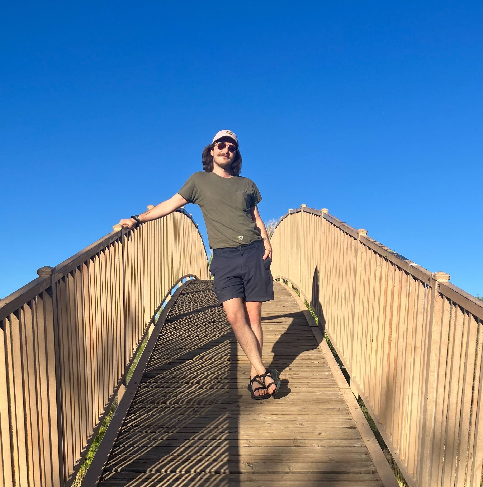

Brandon Neth
Brandon has been a member of the Advanced Programming Team at HPE since October 2023. His Chapel-related work is primarily supporting users and applications, as well as leading Chapel’s community growth efforts. He received his Ph.D. in Computer Science at the University of Arizona in 2024, researching data locality optimizations in performance portability libraries such as RAJA and Kokkos. He views Chapel as an important tool for resolving the tension between performance, portability, and productivity in the HPC field.
In his free time, Brandon enjoys baking, hiking, and helping folks with home organization.
Articles by Brandon Neth
-
Reflections on ChapelCon '25
Posted on December 5, 2025
A retrospective on ChapelCon ‘25 from general chair Brandon Neth
-
Chapel/Fortran Interop in an Ocean Model: Introduction
Posted on April 24, 2025
An introduction to interoperating between Chapel and Fortran
-
Announcing ChapelCon '25!
Posted on March 31, 2025
Announcing our plans for ChapelCon ‘25